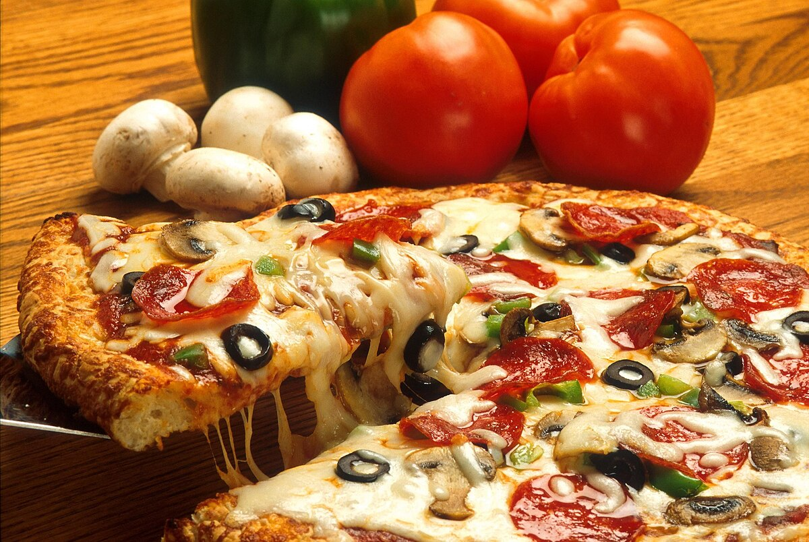

Pizza

Description:
Pizza is a beloved Italian dish consisting of a round, flat dough base topped with a variety of ingredients such as tomato sauce, cheese, meats, vegetables, and herbs. The dough is typically baked at a high temperature, resulting in a crispy, golden crust.
Classic pizza varieties include Margherita, with mozzarella and basil, or Pepperoni, with savory slices of pepperoni. Pizza can be customized with countless toppings to suit any taste, making it one of the most popular comfort foods worldwide.
Pizza is perfect for family dinners, parties, or casual gatherings. You can experiment with different sauces, cheeses, and toppings, or even try out different crusts, such as thin crust or stuffed crust, for added variety.
Ingredients:
- 1 pizza dough ball (store-bought or homemade)
- 1 cup pizza sauce
- 2 cups shredded mozzarella cheese
- 1 cup sliced pepperoni (optional)
- 1 small onion, thinly sliced
- 1 cup sliced bell peppers (optional)
- Olive oil, for drizzling
- 1 tsp dried oregano
- Salt and pepper to taste
- Fresh basil (optional, for garnish)
Steps for Cooking Pizza:
- Preheat the Oven:
- Preheat your oven to 475°F (245°C), or as high as it will go, to achieve a crispy crust.
- Prepare the Pizza Dough:
- Roll out the pizza dough on a floured surface to your desired thickness (thin or thick crust).
- Transfer the rolled-out dough onto a greased or parchment-lined baking sheet or pizza stone.
- Assemble the Pizza:
- Spread a thin layer of pizza sauce over the dough, leaving a small border around the edges for the crust.
- Sprinkle the shredded mozzarella cheese evenly over the sauce.
- Add your choice of toppings (pepperoni, onions, bell peppers, etc.).
- Drizzle with olive oil and season with oregano, salt, and pepper.
- Bake the Pizza:
- Bake the pizza in the preheated oven for 10-15 minutes, or until the crust is golden and the cheese is melted and bubbly.
- Cool and Serve:
- Remove the pizza from the oven and let it cool for a few minutes before slicing.
- Garnish with fresh basil if desired, and serve hot!